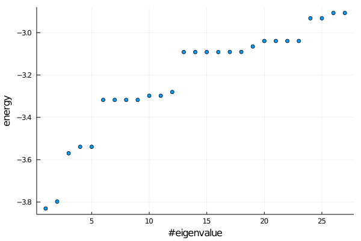
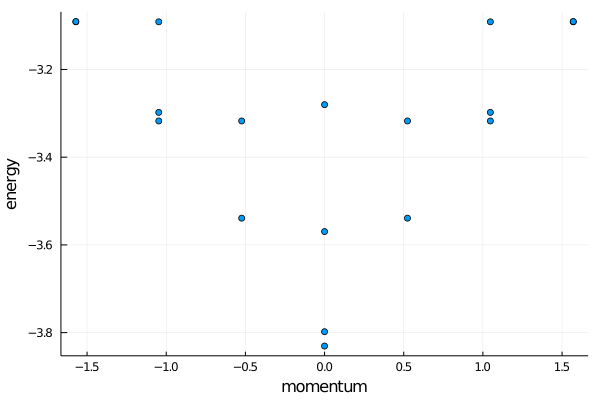
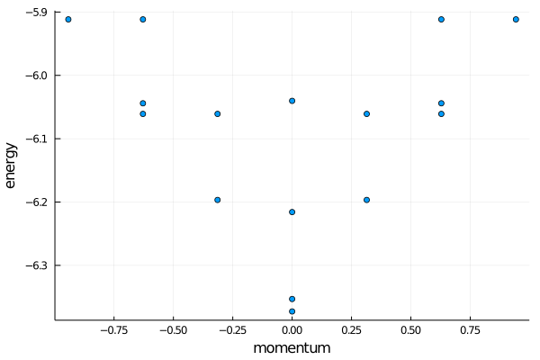

The ising cft spectrum
In this tutorial we will try to plot the finite size cft spectrum for quantum ising, first with exact diagonalization and then going to larger system sizes using mps techniques. The required packages are
using MPSKit, MPSKitModels, TensorKit, Plots, KrylovKit
using LinearAlgebra:eigen,diagm,Hermitian;The ising hamiltonian has already been implemented:
nonsym_ising_ham();MPSKit does not support periodic matrix product states, we only deal with the 'usual' open boundary mps's. However we can still impose periodic boundary conditions on the hamiltonian itself, and the mps will then restore translation invariance. To impose periodic boundary conditions you should call:
circumference = 12;
ham = periodic_boundary_conditions(nonsym_ising_ham(),circumference);exact diagonalization
We implemented rudimentary support for exact diagonalization using a trick - by again representing it as a matrix product state but without truncating the bond dimension. The idea is illustrated below.
Optimizing the middle tensor is then equivalent to optimizing a state in the entire hilbert space.
To call it in julia, do:
(energies,states) = exact_diagonalization(ham,num=18,alg=Lanczos(krylovdim=200));
plot(real.(energies),seriestype=:scatter,legend=false,yaxis="energy",xaxis="#eigenvalue")
Note the large krylov dimension - degenerate eigenvalues are notoriously difficult for iterative methods.
extracting momentum
Given a state, we would like to assign a momentum label. A natural way to do this is by creating the translation operator, as an mpo:

id = complex(isomorphism(ℂ^2,ℂ^2));
@tensor O[-1 -2;-3 -4] := id[-1,-3]*id[-2,-4]
mpo = DenseMPO(O);We don't quite want an infinite mpo - which simply repeats this mpo ad infinitum, but would rather want to impose periodic boundary conditions to this mpo:
mpo = periodic_boundary_conditions(mpo,circumference);You can now simply calculate the momentum of the groundstate as:
angle(dot(states[1],mpo*states[1]))However, there is a subtlety because of the degenerate energy eigenvalues. The eigensolver will find an orthonormal basis within every energy subspace, so states within an energy subspace will not necessarily be momentum eigenstates. To assign a momentum label, we would have to diagonalize the translation operator.
function fix_degeneracies(basis)
N = fill(0.0+0im,length(basis),length(basis));
T = fill(0.0+0im,length(basis),length(basis));
for i in 1:length(basis), j in 1:length(basis)
T[i,j] = dot(basis[i],mpo*basis[j]);
N[i,j] = dot(basis[i],basis[j]);
end
(vals,vecs) = eigen(Hermitian(N));
T = vecs'*T*vecs
T/=diagm(vals);
(vals,vecs) = eigen(T);
angle.(vals);
end
momenta = Float64[];
append!(momenta,fix_degeneracies(states[1:1]));
append!(momenta,fix_degeneracies(states[2:2]));
append!(momenta,fix_degeneracies(states[3:3]));
append!(momenta,fix_degeneracies(states[4:5]));
append!(momenta,fix_degeneracies(states[6:9]));
append!(momenta,fix_degeneracies(states[10:11]));
append!(momenta,fix_degeneracies(states[12:12]));
append!(momenta,fix_degeneracies(states[13:16]));
append!(momenta,fix_degeneracies(states[17:18]));
plot(momenta,real.(energies[1:18]),seriestype=:scatter,xaxis="momentum",yaxis="energy",legend=false)
finite bond dimension
Not much changes at finite bond dimension, except we can now reach higher system sizes.
circumference = 20;
ham = periodic_boundary_conditions(nonsym_ising_ham(),circumference);
state = FiniteMPS(circumference,ℂ^2,ℂ^50 #=bond dimension=#);
(gs,envs) = find_groundstate(state,ham,DMRG());Excitations on top of the groundstate can be found using the quasiparticle ansatz. This returns quasiparticle states, which you can just convert back to the usual finite mps's.
(ens,qps) = excitations(ham,QuasiparticleAnsatz(),gs,envs,num=16);
qpstates = map(qp->convert(FiniteMPS,qp),qps);And we get the spectrum:
states = [gs;qpstates];
energies = map(x->sum(expectation_value(x,ham)),states);
mpo = periodic_boundary_conditions(DenseMPO(O),circumference);
momenta = Float64[];
append!(momenta,fix_degeneracies(states[1:1]));
append!(momenta,fix_degeneracies(states[2:2]));
append!(momenta,fix_degeneracies(states[3:3]));
append!(momenta,fix_degeneracies(states[4:5]));
append!(momenta,fix_degeneracies(states[6:9]));
append!(momenta,fix_degeneracies(states[10:11]));
append!(momenta,fix_degeneracies(states[12:12]));
append!(momenta,fix_degeneracies(states[13:16]));
plot(momenta,real.(energies[1:16]),seriestype=:scatter,xaxis="momentum",yaxis="energy",legend=false)